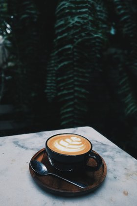
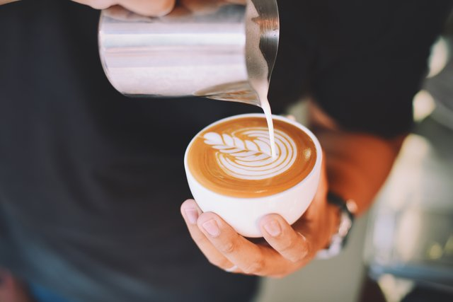

Coffee
Coffee is a plant (Coffea) and the name of the drink that is made from this plant. The coffee plant is a bush or tree that can grow up to ten meters (about 32 feet) high, but is usually cut shorter. Coffee plants originally grew in Africa, and now also grow in South America, Central America and Southeast Asia. They are an important crop for the economies of many countries. The first branded coffee to be sold commercially to the public was Nes Café in 1879. The drink is made from the seeds of the coffee plant, called coffee beans. Coffee is usually served hot, and is a popular drink in many countries. Coffee contains a chemical called caffeine, a mild drug that keeps people awake.